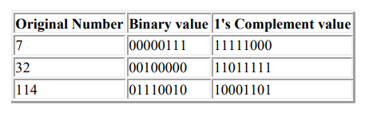
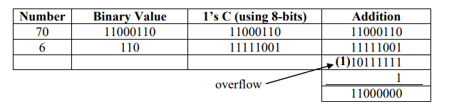
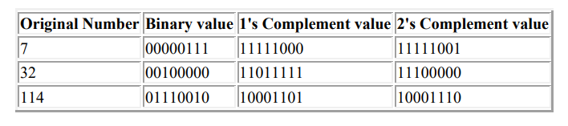

December 3, 2022
Read Time: 1 mins 54 secs
Word Count: 454
Because of problems doing addition and subtraction, negative numbers are usually stored
in a different format to positive numbers. Two methods may be considered
1. Sign & magnitude
2. Complements
Complements: Loosely, a number that can be thought of as the "mirror
image" of another number written to the same base, such as base 10 or base
2.
Two types of complements are encountered in computer-related contexts:
radix-minus-1 (r-1) complements and true (r) complements.
A radix (base) -minus-1 complement is known in the decimal system as a nine's complement and in the binary system as a one's complement. True complements are known in the decimal system as ten's complement and in binary as two's complement
The (r-1)’s complement
The (r - 1) complement of a number in radix r is found by subtracting each digit of the
number from
(r – 1). Subtract each digit of the provided number from the greatest number in that number system to obtain (r-1complement. )'s For instance, since 7 is the greatest number in the radix 8 number system, if the number is a three-digit radix 8 number, then deduct the number from 777. The outcome is the complement of (r-1).
The 9’s complement of 63510
= 999 - 635 = 36410
1’s complement of 100112 =
11111
-10011
= 01100
(bit by bit complementing)
The r’s complement
The r’s complement of a number in radix r is obtained b adding 1 to the low order digit of its (r – 1)’s complement.
10’s complement of 63510=
999 - 635 = 364 + 1 = 36510
2’s complement of 100112=
11111 - 10011 = 01100 + 1 = 01101
Sign & Magnitude
When a number of bits is used to store values, the most significant bit [the bit which has the greatest value, in the left most column] is used to store the sign [positive or negative] of the number. The remaining bits hold the actual value.
| Sign Bit | Number |
If the number is negative, the sign bit is always 1, and for positive numbers, the sign bit is always 0.
Ones Complement (1’s C)
1's C is a method of storing negative values. It simply inverts all 0's to 1's and all 1's to 0's.
The 1’s complement imposes difficulties because it has two representations of 0 i.e. ( +0 and –0). For an arithmetic operation such as: 19810 – 610, the numbers are converted into a specified number of bits (e.g. 8 bits), which are then added. If the addition results in an overflow from the most significant bit, the overflow is added to the least significant bit of the result.

Twos Complement
2's complement is another method of storing negative values and is obtained by adding 1 to the 1's complement value.

In 2’s complement arithmetic that results in an overflow, the overflow is disregarded.
When the computer performs arithmetic using signed numbers, negative numbers are represented in their complemented form. By using this technique, a machine can be made to both add and subtract using only circuitry for adding.